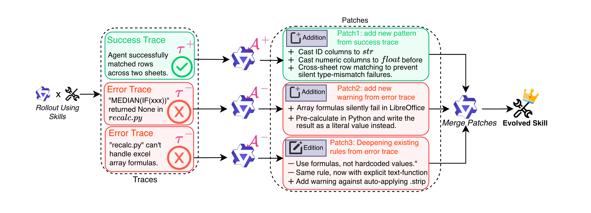
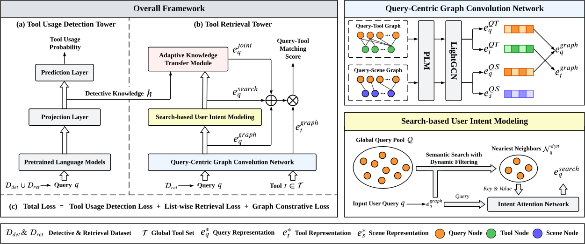
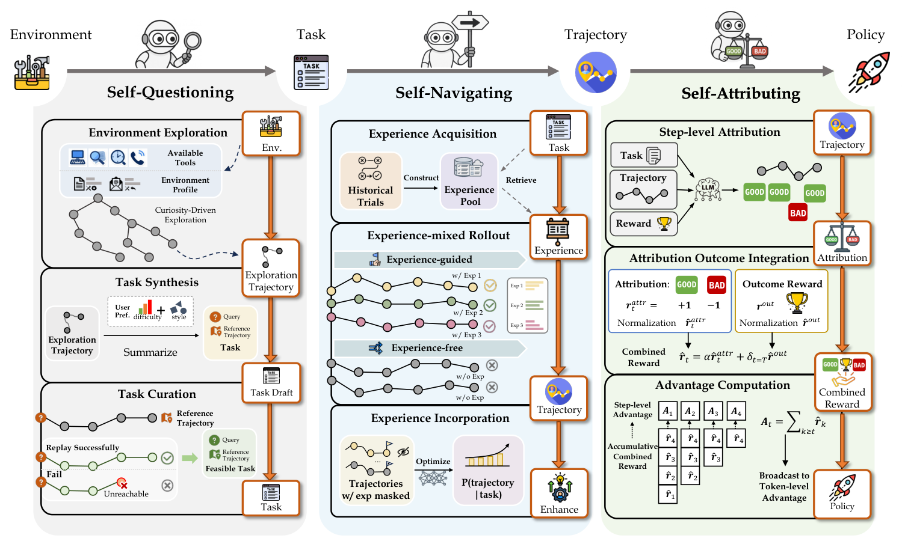

RESEARCH RADAR
Agent / Skill / Tool / Ontology
01 HIT · agentic skill

方法图 · 原文
Trace2Skill: Distill Trajectory-Local Lessons into Transferable Agent Skills
arXiv · cs.AI
·
2026-03
arxiv.org/abs/2603.25158
Fig.2 · 3-stage pipeline
AI 中文导读
做什么 把多条执行轨迹里的局部教训，蒸馏成可跨模型迁移的 skill 目录。
怎么做的 轨迹生成 → 并行成败分析出 patch → 层级合并成单一 SKILL.md（Fig.2）。
新在哪 用 many-to-one 并行归纳，替代逐条 online 改 skill，减少碎片与顺序偏差。
启示 Eve/Win-Agent 的 skill 库应用「批量轨迹 → 一次合并」，而不是每条日志立刻改文档。
02 HIT · tool retrieval

方法图 · 原文
MassTool: A Multi-Task Search-Based Tool Retrieval Framework for LLMs
arXiv · cs.IR / cs.CL
·
2025-07
arxiv.org/abs/2507.00487
Fig.2 · two-tower
AI 中文导读
做什么 在海量工具里先判断「要不要调工具」，再精准召回候选工具。
怎么做的 双塔：Usage Detection + Retrieval（QC-GCN / SUIM / AdaKT），联合优化（Fig.2）。
新在哪 把 tool retrieval 建成双步决策，并强化 query 侧表征，而不只优化 tool embedding。
启示 雷达流水线/企微工具路由应先做 usage detect，再 retrieval，减少瞎调 API。
03 HIT · self-evolving agent

方法图 · 原文
AgentEvolver: Towards Efficient Self-Evolving Agent System
arXiv · cs.AI
·
2025-11
arxiv.org/abs/2511.10395
Fig.2 · 3 mechanisms
AI 中文导读
做什么 让 agent 在新环境里自己出题、自己探索、自己归因，降低手写数据与盲目 RL 成本。
怎么做的 Self-questioning → Self-navigating → Self-attributing 闭环（Fig.2）。
新在哪 把「任务生成 / 经验导航 / 细粒度归因」做成统一自演化框架。
启示 Research Radar 自身也可自演化：失败检索与差解读回流成经验，而不是只推不管。
示例数据 · Design only · 解读四问已从「新在哪里 / 性能 / 怎么解释 / 为什么重要」升级为「做什么 / 怎么做的 / 新在哪 / 对实际应用有什么启示」